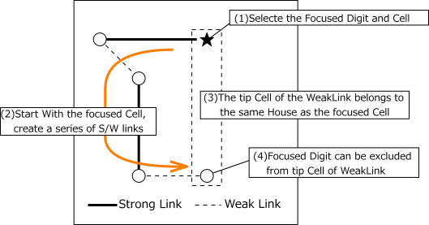
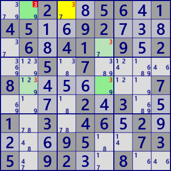
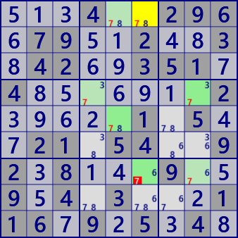

X-Chain
X-Chain is an analysis algorithm using Locked which occurs when concatenating strong and weak links.
Set the focused digit X, start with a strong link from the focused cell,
and connect strong and weak links alternately to make a series.
If the destination cell of the weak link belongs to the same house as the start cell,
X can be excluded from the candidate of this cell.
A strong link is also a weak link, and the link sequence may be a strong-strong-strong link.

Example of X-Chain
 
..2..56.145..92....6.41.9.2..5.7....8.......7....2.3..1.3.46.2....95..735.92..8..
...4..296.79..2..3.42..351.4.......2.....1.5..21.54..92.8...9..9.4.3...116.9.5.4.
X-Chain program
The X-Chain analysis program consists of link series generation and establishment check.
Link series generator
Link series generator is assembled with spreading search processing.
public partial class NXGCellLinkGen: AnalyzerBaseV2{
private IEnumerable<Bit81[]> _GetXChain( int no, List<int> LKRec ){
Bit81 TBD = new Bit81(pBDL,(1<<no));
int rcS;
while( (rcS=TBD.FindFirstrc())>=0 ){
TBD.BPReset(rcS);
Bit81[] CRL=new Bit81[3];
CRL[0]=new Bit81(); CRL[1]=new Bit81(rcS); CRL[2]=new Bit81();
CRL[0].ID=rcS;
Queue<int> rcQue=new Queue<int>();
rcQue.Enqueue( (rcS<<1)|1 ); //(First StrongLink)
LKRec.Clear();
bool firstLK=true;
while(rcQue.Count>0){
int rcX = rcQue.Dequeue();
int swF = 1-(rcX&1); //inversion S-W
int rc1 = (rcX>>1);
foreach( var P in CeLKMan.IEGetRcNoType(rc1,no,(swF+1)) ){
int rc2=P.rc2;
if( (CRL[0]|CRL[1]).IsHit(rc2) ) continue;
CRL[swF].BPSet(rc2);
rcQue.Enqueue( (rc2<<1)|swF );
LKRec.Add( rc1<<8|rc2 );
if( firstLK ) CRL[2].BPSet(rc2);
}
firstLK=false;
}
if( CRL[1].Count>0 ) yield return CRL;
}
yield break;
}
}
X-Chain
public partial class NXGCellLinkGen: AnalyzerBaseV2{
public bool XChain(){
Prepare();
CeLKMan.PrepareCellLink(1); //Generate strongLink
for( int no=0; no<9; no++ ){
int noB=(1<<no);
List<int> LKRec=new List<int>();
foreach( var CRL in _GetXChain(no,LKRec) ){
int rcS=CRL[0].ID; //Bit81.ID is used for information exchange(irregular use)
Bit81 ELM=(ConnectedCells[rcS]&CRL[1])-CRL[2]; //Origin-related Cell and weakLink
if( ELM.IsZero() ) continue;
//===== X-Chain fond =====
.
. (Solution report code)
.
return true;
}
}
return false;
}
}